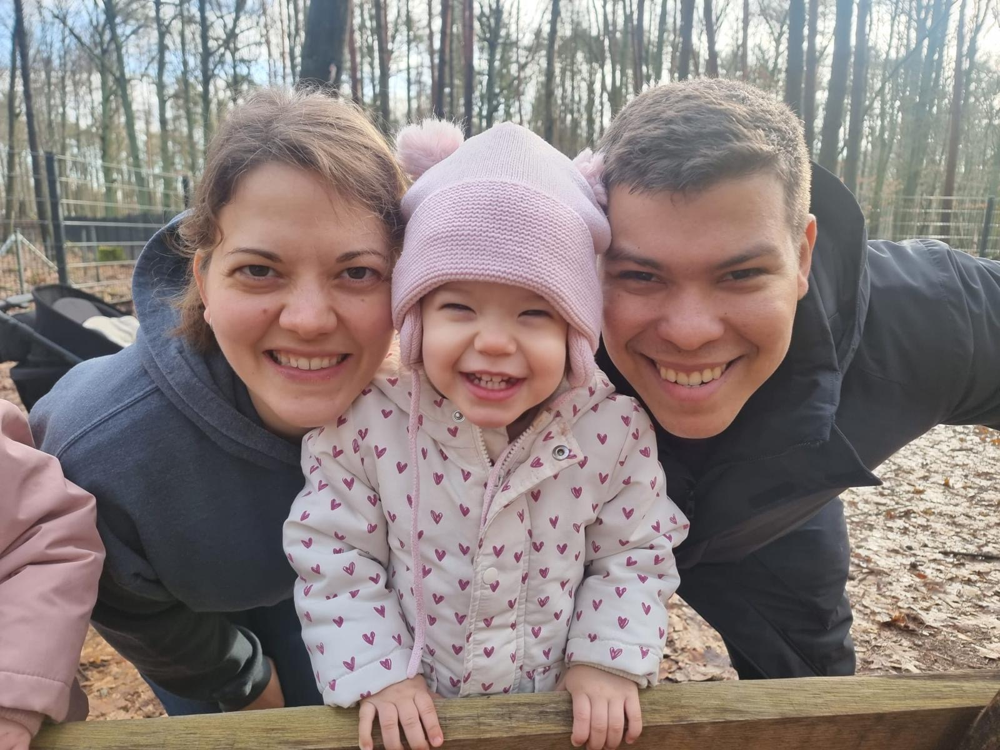
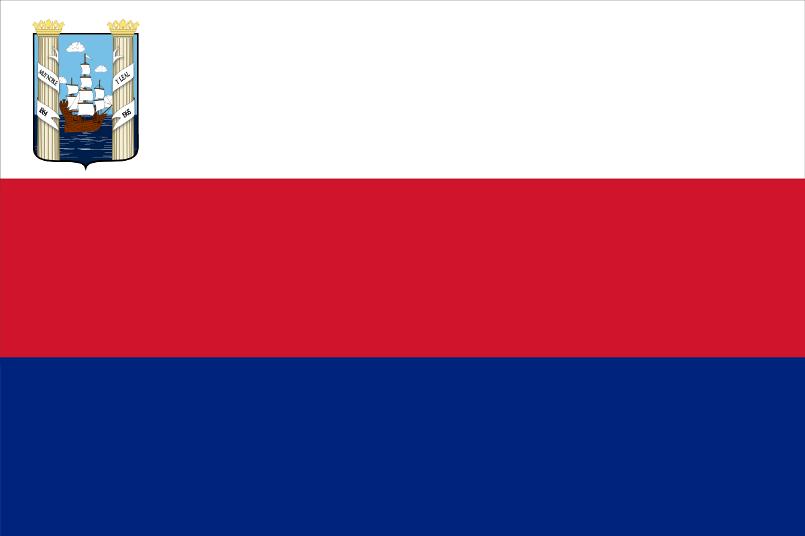

About Myself
My name is Adonai and I go by Ado for friends and family. I was born in Maracaibo, Venezuela, and I live in Berlin, Germany with my wife and kids.
I am currently working as a Night Manager at a hotel and I am on the way to finishing my first certificate from BYU-Idaho. I love video games and spending time with my family whenever I can.
Maracaibo, Venezuela
The city of Maracaibo was founded on September 8, 1529, by Ambrosio Alfinger, an explorer and merchant who was the first Governor of the Province of Venezuela, under the name of 'Villa de Maracaibo' (Maracaibo Village), with a population of only 30 inhabitants. The Capital of the Zulia State is known as 'The Land of the Beloved Sun'.
